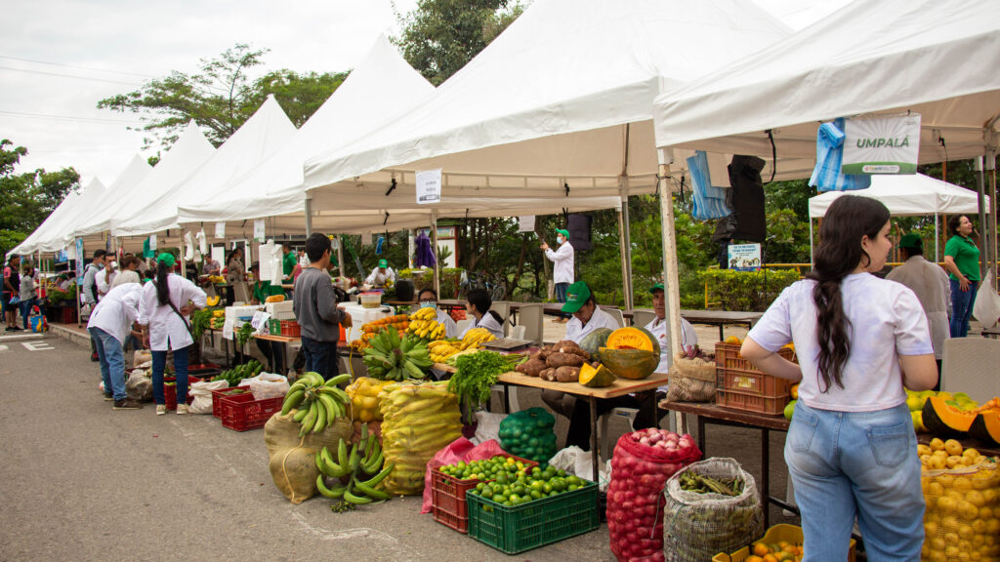
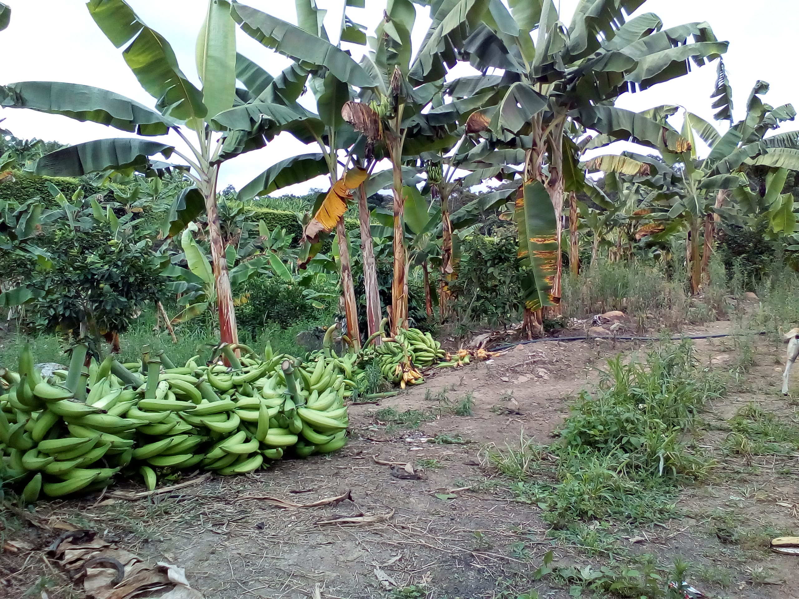
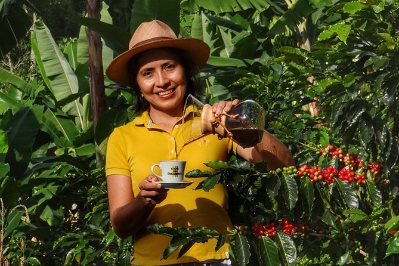
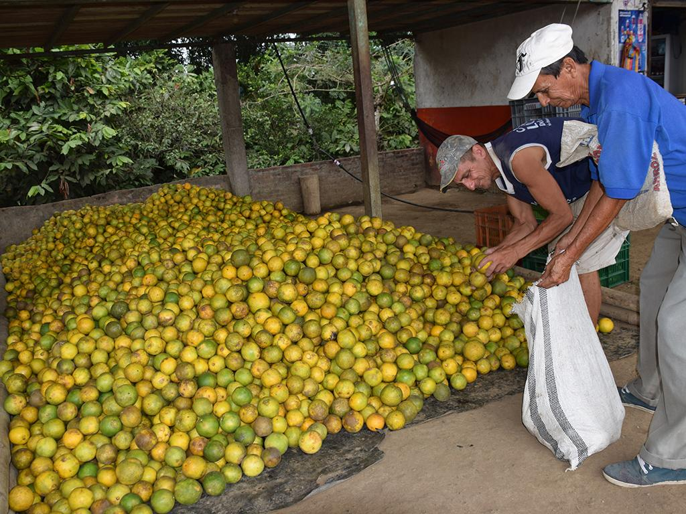

Del Campo a la Mesa
Apoyar a los campesinos es fortalecer nuestras raíces y garantizar un futuro sostenible para todos.

Second slide label
Some representative placeholder content for the second slide.

Third slide label
Some representative placeholder content for the third slide.

Café
Leticia es una caficultora apasionada que cultiva café de alta calidad en su finca, con prácticas sostenibles. Vende café listo para consumo y para procesar, garantizando un sabor suave y lleno de tradición en cada taza.

Naranja
Naranjas recién cortadas, 100% naturales y sin químicos.
Perfectas para jugos o disfrutar directamente. Sabor y frescura garantizados.
¡Llama y asegura las tuyas!